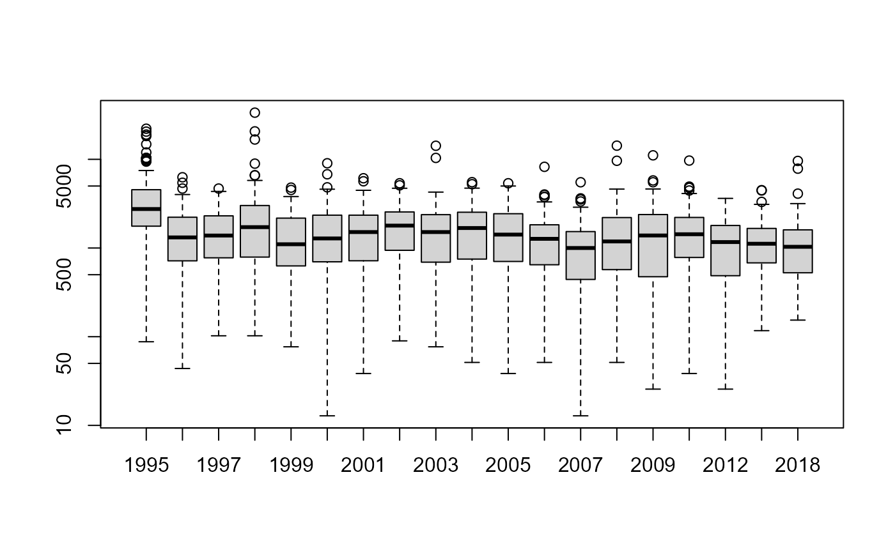
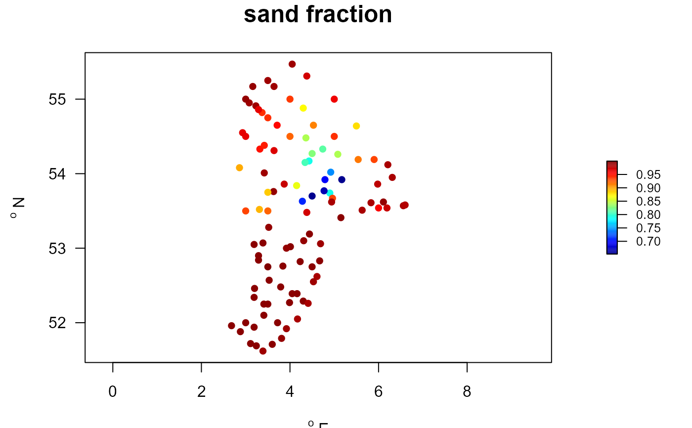
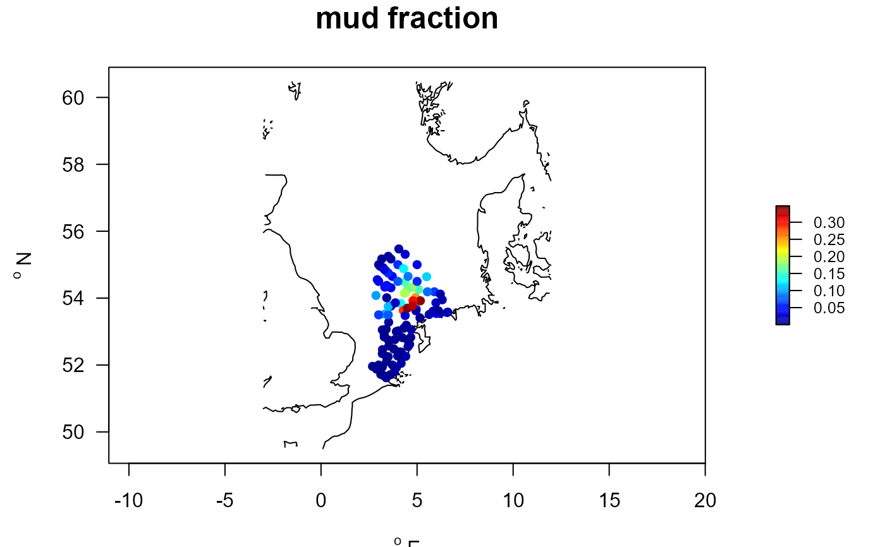
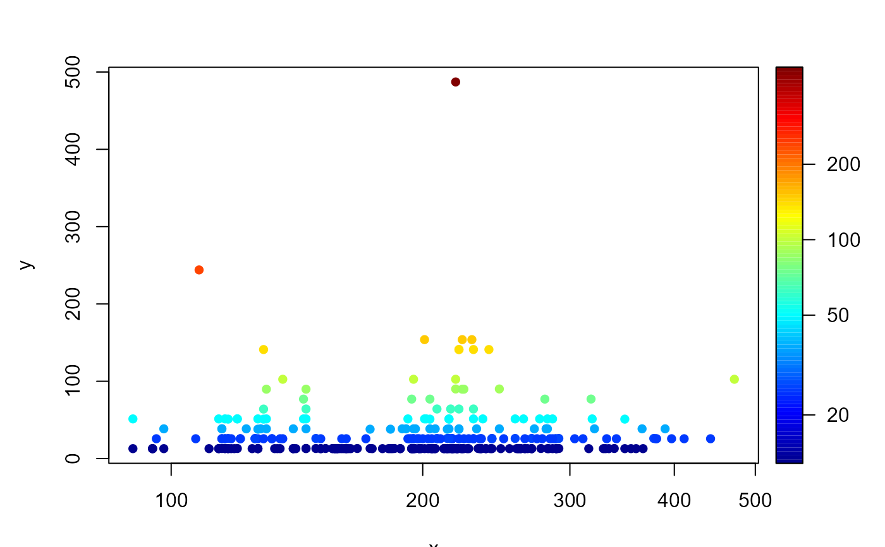
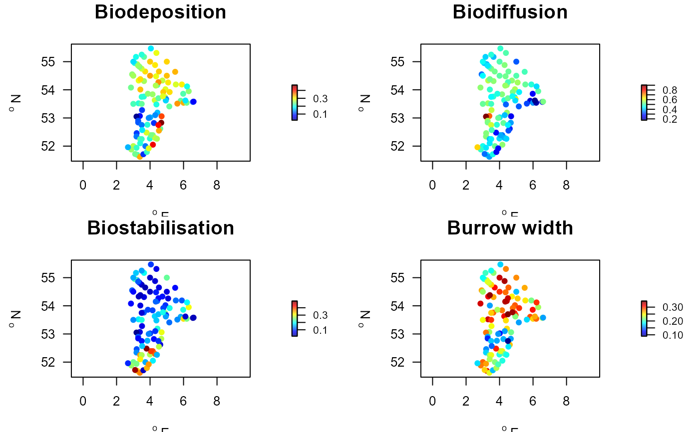
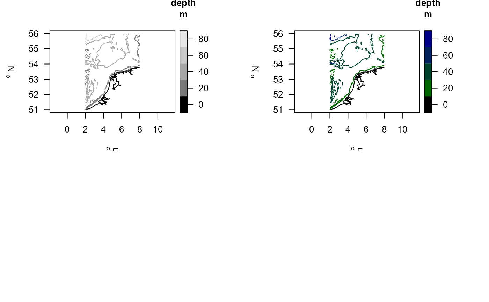

The benthic fauna data from the Dutch part of the Northsea, including abiotic conditions.
MWTLdensitydata.RdThe MWTL Northsea macrobenthos data (1995 - 2018)
The dataset contains:
Macrofauna species density and biomass (MWTL$density)
abiotic conditions (MWTL$abiotics), station types (MWTL$types), sediment composition (MWTL$sediment) and station positions (MWTL$stations)
MWTL$contour: depth contourlines for mapping.
Usage
data(MWTL)Format
==================
**MWTL$density**:
This is the main Northsea MWTL benthos data set, containing species
information for 103 stations sampled on a yearly basis from 1995 till 2010,
after which sampling was less frequent: in 2012, 2015 and 2018.
The data, in long format, are in a data.frame with the following columns:
station, the MWTL station name (details in MWTL$stations).date, the sampling date. Note, this is a string; it can be converted to POSIXct by:as.POSIXct(MWTL$density$date, format='%d-%m-%Y'). The year can be extracted as1900+as.POSIXlt(MWTL$density$date, format='%d-%m-%Y')$year.year, the year of samplingtaxon, the taxon name to be used (usually species); this has been derived from the original taxon in the MWTL data as follows: The original taxon e.g. species is kept, if a minimum of 90% of individual organisms of this taxon are at the species level, genus otherwise, if not family etc. The taxon name was checked against the worms database (details in datasetTaxonomy).density, the number of individuals per m2.biomass, the total biomass per m2, in AFDW/m2 (ash-free dry weight)taxon.original, the original taxon name in the data set (see details).
==================
A data.frame with the following columns:
taxon, genus, family, order, class,
phylum, AphiaID.
=========================================
**MWTL$abiotics and MWTL$types**:
the abiotic conditions of sampling stations,
numerical values (MWTL$abiotics) or typologies (MWTL$types), averaged over all years.
MWTL$abiotics is a data.frame with the following columns: CHECK IT!
station, the MWTL station name.
current, the mean current speed, [m/s]
wave, wave energy [Pa]
disturb, ??? [???]
sal, salinity [-]
pelag.PP, pelagic Primary Production (spring) [?? mg C m-2 d-1???]
mud, mud [-]
gravel, gravel [-]
sand, sand [-]
PP, pelagic PP (sping) [?? mg C m-2 d-1??]
POM, particulate organic matter [%]
POC, particulate organic carbon [%]
Aspect, Aspect [???]
Curvature, Curvature [???]
Rugosity, Rugosity2 [???]
Northing, Northing [???]
Slope, Slope [???]
MWTL$types categorizes the stations into a number of types:
station, the MWTL station name.
depth (m)
Very shallow: < 10,
Shallow: [10; 20[,
Intermediate: [20; 30[,
Deep: [30; 40[,
Very deep: >= 40
current (m/s):
Very low: < 0.15,
Low: [0.15; 0.20[,
Intermediate: [0.20; 0.25[,
High: [0.25; 0.30[,
Very high: >= 0.30
The numbers are Monthly median values, in meters per second averaged from 1996 to 2008
wave energy (Pa):
Very low: < 0.5,
Low: [0.5; 1.0[,
Intermediate: [1.0; 1.5[,
High: [1.5; 2.0[,
Very high: >= 2.0
; the data are monthly median values in pascals averaged from 1996 to 2008.
stratification
PM : Permanently mixed
FI : Freshwater influence
IS : Intermittently stratified
SS : Seasonally stratified
TR : Transitional
sediment
Muddy includes Mud, Sandy mud, Sandy and slightly gravely mud, Muddy sand;
Sandy means only Sand;
Coarse includes: Gravel and muddy sand, Slightly gravely sand, Gravely sand, Sandy gravel, Gravel and stone;
Mixed includes Gravely and slightly muddy sand,
where clay <8 um, silt: 8-63, very fine sand: 62-125, fine sand: 125-250, medium sand: 250-500, coarse sand: 500-1000, very coarse sand: 1000-2000, gravel: >2000 um (micrometer).
BPI_xx Benthic Terrain Classification parameters, bathymetric position index
dynamics
L: low
H: high
area
DOG: Doggersbank
OYS: Oystergrounds
OFF: Offshore
COA: Coastal zone
==================
**MWTL$stations**:
The positions of the different stations, in WGS84 format
station, the MWTL station name.
x, degrees longitude
y, degrees latitude
==================
**MWTL$sediment**:
records the sediment characteristics (median grain size and silt content)
for the different stations and years.
The data for "BREEVTN11" "BREEVTN16" "WADDKT05" are missing.
This is a data.frame with:
station, the MWTL station name.
year, the sampling year.
D50, the median grain size of the sediment, in micrometer
silt, the silt and clay content (< 63 micrometer), in percentage
De sediment grainsize was determined by laserdiffraction using a Malvern Mastersizer. Values denote weight percentages dryweight of the total sediment sample, where big shells and large animals were removed.
==================
**MWTL$contours**:
The data for plotting the depth contours in the area.
The contourlines (x-, y) were derived from GEBCO high-resolution bathymetry,
by using the contourLines R-function.
The data set contains:
x: longitude, in [dgE]
y: latitude, in [dgN]
z: the corresponding depths, [m]
Note
The dataset **Taxonomy**:
contains taxonomic information of the original and adjusted taxon in MWTL$density,
as derived from the World Register of Marine Species (WORMS), using R-package worms.
Details
The macrobenthos data of the Northsea (MWTL) are commissioned by the "Ministerie van Infrastructuur en Milieu, Rijkswaterstaat Centrale Informatievoorziening (RWS, CIV)".
MWTL stands for Monitoring Waterstaatkundige Toestand des Lands (dutch).
Sediment was sampled with a Reineck Boxcorer (0,078 m2). Macrofauna sieved on a 1 mm mesh. All animals determined, except when too much residue or organisms, in which case samples were subsampled, so that for molluscs and crustaceans at least 100 individuals, and for polychaetes at least 150 individuals were determined.
Biomass was determined as ash-free dryweight: individuals were dried for >48 hours at 65 dgC, and then cooled in an exsiccator for at least 30 minutes and weighed (precision 0,01 mg), determining their dryweight. Then they were ashed in an oven at 530 dgC (2,5, 4 or 8 hour, depending on the size of organisms). Following ashing, they were weighed, after cooling for at least 45 minutes in an exsiccator. Bivalvia and Gastropoda =7 mm were ashed without shell, but when smaller than 7 mm the shell was not removed.
AFDW = (dryweight + weight cup) ? (ash weight + weight cup).
References
The taxonomic information was created using the worms package:
Jan Holstein (2018). worms: Retrieving Aphia Information from World Register of Marine Species. R package version 0.2.2. https://CRAN.R-project.org/package=worms
L. Leewis, E.C. Verduin, R. Stolk ; Eurofins AquaSense Macrozoobenthosonderzoek in de Rijkswateren met boxcorer, jaarrapportage MWTL 2015 : waterlichaam: Noordzee Publicatiedatum: 31-03-201775 p. Projectnummer Eurofins AquaSense: J00002105. Revisie 2, In opdracht van Ministerie van Infrastructuur en Milieu, Rijkswaterstaat Centrale Informatievoorziening (RWS, CIV)
See also
mapBtrait for plotting.
Traits_nioz for the trait datasets.
getDensity for functions operating on these data.
long2wide for functions changing the appearance on these data.
getDbIndex for extracting bioturbation and bioirrigation indices.
Examples
##-----------------------------------------------------
## Show contents of the data set
##-----------------------------------------------------
metadata(MWTL$sediment)
#> name description units
#> 1 D50 median grain size, in micrometer micrometer
#> 2 Silt Silt+Clay fraction (< 63 micrometer) in % %
metadata(MWTL$abiotics)
#> name description units
#> 1 depth water depth m
#> 2 D50 Median grain size micrometer
#> 3 mud mud fraction (<63 um) -
#> 4 sand sand fraction (64 -2000 um) -
#> 5 gravel gravel fraction (>2000 um) -
#> 6 salinity salinity
#> 7 porosity volumetric water content -
#> 8 permeability permeability m2
#> 9 POC particulate organic C in sediment %
#> 10 TN total N in sediment %
#> 11 surfaceCarbon particulate organic C in upper cm %
#> 12 surfaceNitrogen total N in upper cm %
#> 13 orbitalVelMean mean orbital velocity m/s
#> 14 orbitalVelMax maximal orbital velocity m/s
#> 15 tidalVelMean mean tidal velocity m/s
#> 16 tidalVelMax maximal tidal velocity m/s
#> 17 bedstress bed shear stress Pa
#> 18 EUNIScode EUNIScode -
#> 19 SAR swept area ratio (fisheries) m2/m2/year
metadata(MWTL$types)
#> $stratification
#> [1] "PM=Permanently mixed, FI=Freshwater influence, IS=Intermittently stratified, SS=Seasonally stratified, TR=Transitional"
#>
#> $sediment
#> [1] "'Muddy'=[Mud, Sandy mud, Sandy and slightly gravely mud, Muddy sand]; 'Sandy'= [Sand]; 'Coarse'=[Gravel and muddy sand, Slightly gravely sand, Gravely sand, Sandy gravel, Gravel and stone]; 'Mixed' = [Gravely and slightly muddy sand], where 'clay'=[<8 um], 'silt'=[8-63], ' 'very fine sand'=[62-125], 'fine sand'=[125-250], 'medium sand'=[250-500], 'coarse sand'=[500-1000], 'very coarse sand'=[1000-2000], 'gravel'=[>2000 um] (micrometer)."
#>
#> $depth
#> [1] "'Very shallow'=[<10m]; 'Shallow'=[10; 20[; 'Intermediate'=[20; 30[; 'Deep'=[30; 40[; 'Very deep'=[>= 40m]"
#>
#> $current
#> [1] "'Very low'=[<0.15]; 'Low'=[0.15; 0.20[; 'Intermediate'=[0.20; 0.25[; 'High'=[0.25; 0.30[; 'Very high'=[>=0.30m/s]"
#>
#> $wave
#> [1] "Very low < 0.5; Low [0.5; 1.0[; Intermediate [1.0; 1.5[; High [1.5; 2.0[; Very high >= 2.0"
#>
#> $BPx
#> [1] "bathymetric position index derived from ship-borne multibeam swath acoustic data"
#>
#> $dynamics
#> [1] "L=low; H=high"
#>
#> $area
#> [1] "Coast (COA), Doggerbank (DOG), Offshore (OFF), Oystergrounds (OYS)"
#>
#> $group
#> [1] "derived from first part of station name"
#>
metadata(MWTL$density)
#> name description units
#> 1 station station name
#> 2 date sampling date, a string
#> 3 taxon taxon name, checked by worms, and adjusted
#> 4 density species total density individuals/m2
#> 5 biomass species total ash-free dry weight gAFDW/m2
#> 6 taxon.original original taxon name
##-----------------------------------------------------
## SPECIES data
##-----------------------------------------------------
head(MWTL$density)
#> station date year taxon density biomass
#> 1 BREEVTN02 27-06-1995 1995 Bathyporeia guilliamsoniana 14.6 0.0044
#> 2 BREEVTN02 27-06-1995 1995 Callianassa 58.5 1.3986
#> 3 BREEVTN02 27-06-1995 1995 Chaetozone setosa 14.6 0.0073
#> 4 BREEVTN02 27-06-1995 1995 Chamelea striatula 14.6 2.7738
#> 5 BREEVTN02 27-06-1995 1995 Echinocardium 43.9 0.0044
#> 6 BREEVTN02 27-06-1995 1995 Echinocardium 14.6 4.9435
#> taxon.original
#> 1 Bathyporeia guilliamsoniana
#> 2 Callianassa subterranea
#> 3 Chaetozone setosa
#> 4 Chamelea striatula
#> 5 Echinocardium
#> 6 Echinocardium cordatum
# The number of species per station (over all years)
Nspecies <- tapply(X = MWTL$density$taxon,
INDEX = MWTL$density$station,
FUN = function(x)length(unique(x)))
summary(Nspecies)
#> Min. 1st Qu. Median Mean 3rd Qu. Max.
#> 16.00 58.50 88.00 82.14 105.50 132.00
# Per year
Nspyear <- tapply(X = MWTL$density$taxon,
INDEX = list(MWTL$density$station, MWTL$density$year),
FUN = function(x)length(unique(x)))
colMeans(Nspyear, na.rm=TRUE)
#> 1995 1996 1997 1998 1999 2000 2001 2002
#> 24.07000 18.60606 21.00000 21.33000 20.46000 22.01000 22.39000 24.01000
#> 2003 2004 2005 2006 2007 2008 2009 2010
#> 22.14000 21.95000 21.00980 20.37000 18.24000 19.09000 18.88000 20.97000
#> 2012 2015 2018
#> 19.56000 20.30303 19.60204
# The number of times a species has been found
Nocc <- tapply(X = MWTL$density$station,
INDEX = MWTL$density$taxon,
FUN = length)
head(sort(Nocc, decreasing = TRUE)) #most often encountered taxa
#> Nephtys Magelona Nemertea Spiophanes bombyx
#> 2785 1760 1272 1198
#> Phoronis Echinocardium
#> 996 948
# total density
densyear <- tapply(X = MWTL$density$density,
INDEX = list(MWTL$density$station, MWTL$density$year),
FUN = sum)
boxplot(densyear, log="y")

##-----------------------------------------------------
## ABIOTICS data
##-----------------------------------------------------
summary(MWTL$abiotics)
#> station depth D50 mud
#> Length:103 Min. : 5.80 Min. : 90.0 Min. :0.00002
#> Class :character 1st Qu.:24.10 1st Qu.:148.4 1st Qu.:0.00100
#> Mode :character Median :29.60 Median :205.1 Median :0.01105
#> Mean :30.37 Mean :222.6 Mean :0.05160
#> 3rd Qu.:39.50 3rd Qu.:273.4 3rd Qu.:0.06319
#> Max. :53.70 Max. :527.1 Max. :0.34772
#> NA's :3
#> sand gravel salinity porosity
#> Min. :0.6523 Min. :0.0001033 Min. :27.63 Min. :0.3821
#> 1st Qu.:0.9368 1st Qu.:0.0001251 1st Qu.:32.91 1st Qu.:0.3955
#> Median :0.9889 Median :0.0001861 Median :34.30 Median :0.4056
#> Mean :0.9483 Mean :0.0010354 Mean :33.46 Mean :0.4158
#> 3rd Qu.:0.9990 3rd Qu.:0.0005031 3rd Qu.:34.53 3rd Qu.:0.4312
#> Max. :1.0000 Max. :0.0201886 Max. :34.77 Max. :0.5102
#>
#> permeability POC TN surfaceCarbon
#> Min. :4.759e-15 Min. :0.04682 Min. :0.03000 Min. :0.07304
#> 1st Qu.:9.380e-14 1st Qu.:0.16854 1st Qu.:0.03426 1st Qu.:0.26410
#> Median :3.882e-13 Median :0.22429 Median :0.03690 Median :0.34363
#> Mean :1.112e-12 Mean :0.27913 Mean :0.04310 Mean :0.42828
#> 3rd Qu.:1.030e-12 3rd Qu.:0.41189 3rd Qu.:0.04940 3rd Qu.:0.62366
#> Max. :1.530e-11 Max. :0.69416 Max. :0.08074 Max. :1.11217
#> NA's :1 NA's :1 NA's :1
#> surfaceNitrogen orbitalVelMean orbitalVelMax tidalVelMean
#> Min. :0.04522 Min. :0.02655 Min. :0.2493 Min. :0.1100
#> 1st Qu.:0.05343 1st Qu.:0.04995 1st Qu.:0.4157 1st Qu.:0.1569
#> Median :0.05742 Median :0.06651 Median :0.5075 Median :0.2261
#> Mean :0.06652 Mean :0.08495 Mean :0.5785 Mean :0.2408
#> 3rd Qu.:0.07421 3rd Qu.:0.08331 3rd Qu.:0.6041 3rd Qu.:0.2998
#> Max. :0.12846 Max. :0.77342 Max. :3.3570 Max. :0.4878
#> NA's :1
#> tidalVelMax bedstress EUNIScode SAR
#> Min. :0.2501 Min. :0.0500 Length:103 Min. :0.1100
#> 1st Qu.:0.3352 1st Qu.:0.1350 Class :character 1st Qu.:0.4766
#> Median :0.4862 Median :0.3300 Mode :character Median :0.6968
#> Mean :0.5128 Mean :0.4562 Mean :1.1262
#> 3rd Qu.:0.6432 3rd Qu.:0.6900 3rd Qu.:1.3009
#> Max. :0.9724 Max. :1.3950 Max. :6.8926
#> NA's :4
MWTLabiot <- merge(MWTL$stations, MWTL$abiotics)
with(MWTLabiot, mapBtrait(x, y, colvar=sand,
pch=16, main="sand fraction"))

# mud, plotted on large Northsea map
with(MWTLabiot, mapBtrait(x, y, colvar=mud, contours=NSBS$contours,
pch=16, main="mud fraction"))

# show the different abiotic data sets
metadata(MWTL$abiotics)
#> name description units
#> 1 depth water depth m
#> 2 D50 Median grain size micrometer
#> 3 mud mud fraction (<63 um) -
#> 4 sand sand fraction (64 -2000 um) -
#> 5 gravel gravel fraction (>2000 um) -
#> 6 salinity salinity
#> 7 porosity volumetric water content -
#> 8 permeability permeability m2
#> 9 POC particulate organic C in sediment %
#> 10 TN total N in sediment %
#> 11 surfaceCarbon particulate organic C in upper cm %
#> 12 surfaceNitrogen total N in upper cm %
#> 13 orbitalVelMean mean orbital velocity m/s
#> 14 orbitalVelMax maximal orbital velocity m/s
#> 15 tidalVelMean mean tidal velocity m/s
#> 16 tidalVelMax maximal tidal velocity m/s
#> 17 bedstress bed shear stress Pa
#> 18 EUNIScode EUNIScode -
#> 19 SAR swept area ratio (fisheries) m2/m2/year
##-----------------------------------------------------
## COMBINATIONS
##-----------------------------------------------------
NSsp_abi <- merge(MWTL$density, MWTL$sediment)
ECH <- subset(NSsp_abi, subset=taxon=="Echinocardium")
with(ECH, points2D(D50, density, log="xc", colvar=density, pch=16))

# add station coordinates
ECH <- merge(ECH, MWTL$stations)
##-----------------------------------------------------
## From long format to wide format (stations x species)
##-----------------------------------------------------
NSwide <- with (MWTL$density,
l2wDensity(descriptor = station,
taxon = taxon,
value = density,
averageOver = year))
PP <- princomp(t(NSwide[,-1]))
if (FALSE) {
biplot(PP)
}
##-----------------------------------------------------
## Community weighted mean score.
##-----------------------------------------------------
# Traits estimated for absences, by including taxonomy
NStrait.lab <- metadata(Traits_nioz)
trait.cwm <- getTraitDensity (wide = NSwide,
trait = Traits_nioz,
taxonomy = Taxonomy,
trait.class = NStrait.lab$trait,
trait.score = NStrait.lab$score,
scalewithvalue = TRUE)
head(trait.cwm, n=c(3,4))
#> descriptor Age.at.maturity Annual.fecundity Biodeposition
#> 1 BREEVTN02 0.3292563 0.3976374 0.2097908
#> 2 BREEVTN03 0.3214742 0.4633356 0.1636630
#> 3 BREEVTN04 0.1273492 0.3011162 0.1416944
Stations.traits <- merge(MWTL$stations, trait.cwm,
by.x="station", by.y="descriptor")
##-----------------------------------------------------
## Maps
##-----------------------------------------------------
par(mfrow=c(2,2))
with(Stations.traits, mapBtrait(x, y, colvar=Biodeposition,
main="Biodeposition", pch=16))
with(Stations.traits, mapBtrait(x, y, colvar=Biodiffusion,
main="Biodiffusion", pch=16))
with(Stations.traits, mapBtrait(x, y, colvar=Biostabilisation,
main="Biostabilisation", pch=16))
with(Stations.traits, mapBtrait(x, y, colvar=Burrow.width,
main="Burrow width", pch=16))

##-----------------------------------------------------
## Show the depth contours
##-----------------------------------------------------
mapBtrait(contours=MWTL$contours, draw.levels=TRUE, key.levels=TRUE)
# Use a different color scheme
collev <- function(n) c("black",
ramp.col(col=c("darkgreen", "darkblue"), n=n-1))
mapBtrait(contours=MWTL$contours, draw.levels=TRUE, col.levels=collev,
key.levels=TRUE)
